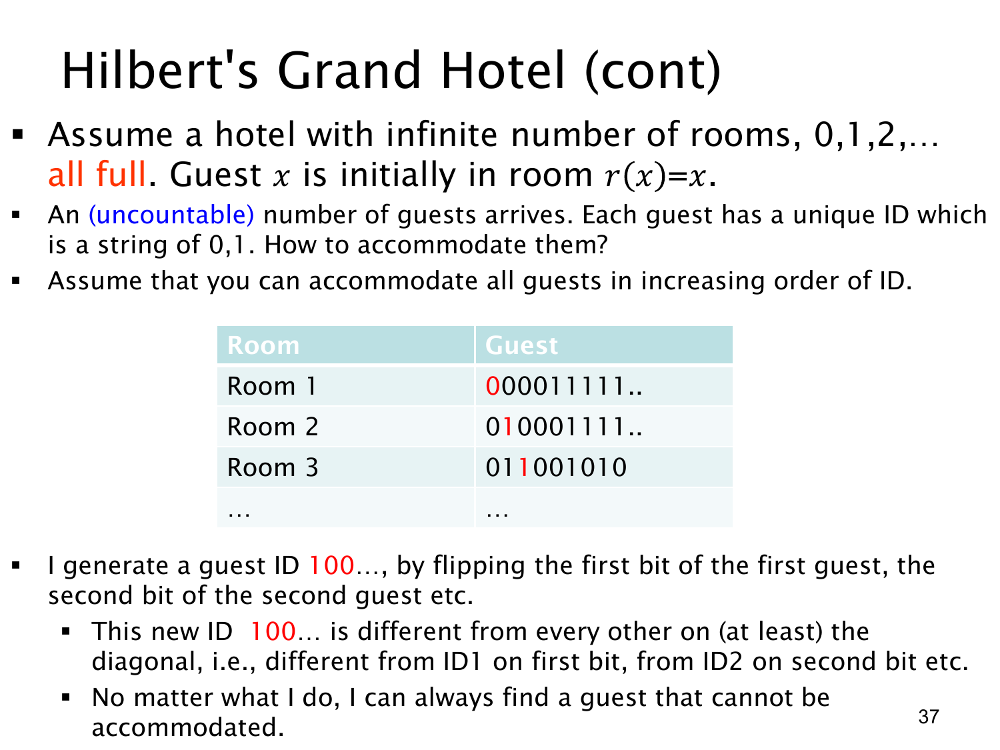

查看这一页课件

对角线法：为什么不可数多位客人住不进可数房间
本页从前两页的可数客群转向不可数客群。设每位新客人的 ID 是一个无限长的 0/1 序列。若要说明所有这类无限位串不能被房间 0,1,2,… 一一容纳，可以先假设已经把它们全部列成一个序列：第 1 行是第 1 位的 ID，第 2 行是第 2 位的 ID，依此类推。这里“按 ID 递增”不是论证所需条件；关键只是声称存在一份完整的可数列表。
现在构造一个新 ID d=d1d2d3…：令 di 与列表中第 i 行的第 i 位相反。若对角线前三位是 0,1,1，新 ID 的前三位就是 1,0,0，课件写作 100…。新 ID 与第 1 行至少在第 1 位不同，与第 2 行至少在第 2 位不同；一般地，它与第 i 行至少在第 i 位不同，所以不等于列表上的任何一个 ID。
但 d 仍是一个无限长 0/1 序列，本应在“全部 ID”的列表中，形成矛盾。因此不可能把所有无限二进制序列列成自然数编号的清单；这就是康托尔对角线论证。若每个这类序列对应一位新客，房间只有可数多间，那么无论怎样重新安排，都会有客人没有房间。
这里与上一页的“斜对角枚举”结论相反，是因为对象的结构不同：上一页每位客人由两个有限整数编号确定，可以沿有限对角线逐个列出；本页每个 ID 是无限多个二进制位，对任何可数列表都能按对角线制造出一个遗漏项。原页表格只画了前几行和若干位，用于展示构造方式；严格论证需要 ID 为无限序列，并且讨论的是所有这样的序列。
查看本页勘误
L1.4 第 37 页：对角线论证的 ID 范围
课件称客人 ID 为“0、1 字符串”，并说“按 ID 递增”安排，再翻转每行的对角位。严格的对角线论证需要讨论所有无限长二进制序列；若 ID 只允许有限长字符串，它们本身是可数的，不能由这段构造推出不可数。若只取无限位串的某个特定子集，翻转得到的新串也未必属于该子集。
“按 ID 递增”不是所需假设，也不应作为无限位串可数枚举的理由。正确反证起点是：假设所有无限二进制序列存在某个自然数编号的完整列表；逐行翻转对角位可构造出仍属于该集合、却不在列表中的新序列，因而否定完整列表的存在。原课件图和逐页讲解原文保持不变。